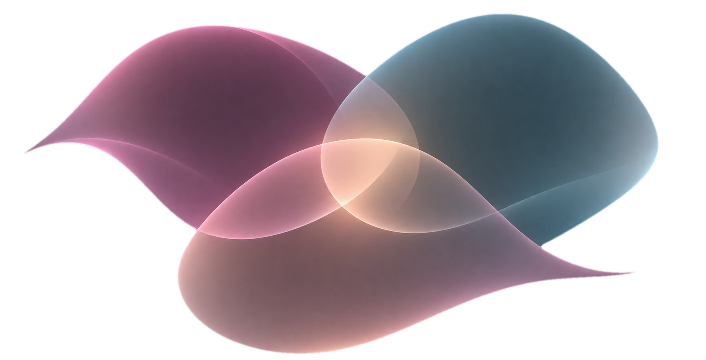
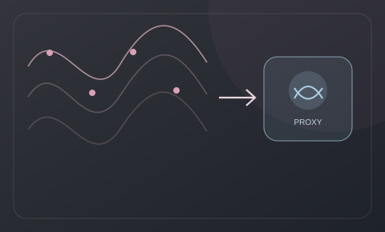

I enjoy working across the entire machine learning lifecycle, from exploring research ideas to building reliable systems that work in the real world. My experience spans generative AI, language, computer vision, and production ML, and I’m especially interested in the challenges that connect them.
Where Ideas Become Systems
I don’t see research, engineering, and deployment as separate. The most interesting work happens when they combine.
From exploring new ideas to designing, evaluating, and deploying dependable ML systems.

ResearchExplore · invent · validate
AI ML SystemsDesign · build · evaluate
DeploymentDeploy · operate · create impact
NLPAgentic AI & RAGComputer VisionRecommendation SystemsEvaluationMLOps
Technical Skills & Certifications
Tools and technologies I use across ML research, engineering, and production.
AI and machine learning engineering · Jul 2022 – Aug 2025
Two roles + research internship
Applied AI ML Engineer
Jun 2024 – Aug 2025
Generative AI · European insurance client
60% faster policy-query resolution with an agentic RAG assistant for a European insurance client, delivered from prototype to production.
Architected LangGraph multi-agent workflows with tool routing, state, fallbacks, prompt/context engineering and custom MCP servers and clients.
Built embedding and retrieval infrastructure on Milvus for 50,000+ chunks with PostgreSQL, Azure OpenAI and vLLM-served models.
Established Ragas and LLM-as-judge evaluation in GitLab CI/CD, tracking faithfulness, answer relevancy, context precision and recall.
Built and tested FastAPI services integrated with the frontend; implemented OAuth security and pytest unit and integration tests.
Implemented RBAC, PII and prompt-injection guardrails with sub-50 ms overhead, plus Azure APIM/Content Safety; Terraform-based governance cut policy deployment time by 90%.
Deployed Docker workloads on Azure Kubernetes Service with LangSmith tracing, Prometheus metrics and Grafana dashboards.
Led technical delivery with cross-functional and client teams: requirements workshops, Agile planning, solution alignment and end-of-sprint demos communicating technical outcomes to non-technical stakeholders.
LangGraphMilvusFastAPIAzure AKS
Machine Learning Engineer
Jul 2022 – Jun 2024
TCS Rapid Innovation Lab
90% straight-through processing from a document AI pipeline using Table Transformers and TrOCR, creating structured outputs for 2,000+ employees.
Developed an NLP parser for text-to-sign-language conversion, generating SigML/HamNoSys representations for pose animation.
Built a pose estimation and animation pipeline with PoseNet, MediaPipe and TensorFlow, adding 42 hand keypoints and a custom loss function.
Built ARIMA, SARIMA and NeuralProphet forecasting pipelines for a pharmaceutical use case, reducing forecast error 27% and improving accuracy 35%.
Explored tiny-object detection on satellite imagery with YOLO and transformer-based models.
Mentored 4+ cross-functional teams through internal AI initiatives and the GenAI training programme, supporting technical design, proofs of concept and code reviews across client accounts.
Presented research findings and proof-of-concept results to technical and non-technical stakeholders, collaborating with banking, airline and insurance teams.
NLPComputer VisionForecasting
Research Intern · 3D Human Digitisation
Before Jul 2022 · 3-month internship
TCS Rapid Innovation Lab · exact dates to confirm
V-PIFuHD: researched 3D human reconstruction from monocular video during a team internship.
Investigated 3D reconstruction architectures and approaches including PIFu, PIFuHD, VIBE, GAN2Shape, ShapeNeRF and DeepSDF.
Collaborated with fellow interns and research mentors on experimental deep-learning approaches to digitising human shape from video.
3D VisionDeep LearningHuman Reconstruction
Vidyalankar Institute of Technology
NLP Research Assistant · May 2020 – Jul 2020
Developed and deployed VBot, the official admissions chatbot for VIT’s website, integrating the Dialogflow application into the web interface for prospective student enquiries.
Designed 200+ admission query flows using Dialogflow intents and entities, implementing conversational logic and rich responses with text, images, videos, and hyperlinks.
Projects
From research prototypes to production AI systems. A few highlights, then four compact collections of work that cross disciplines.
Selected work
Three starting points
Explore the intersections
Choose a collection to see its projects. Some work appears in multiple collections because its disciplines overlap.
Research & Publications

MSc individual project · 2026
Amortized Trustworthiness: Training Small Language Models as Real-Time Cross-Model Semantic Uncertainty Proxies for LLMs
Supervised by Dr. Matthew Wicker · Imperial College London